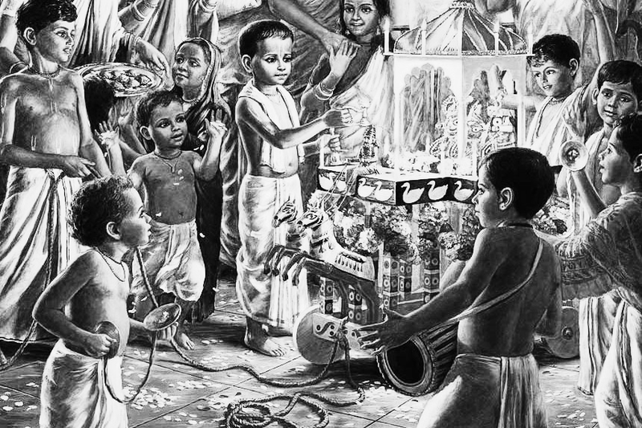

Support Us
We are a growing non-profit organization dedicated to spreading Krishna consciousness. This is a fund for the preaching projects and food distributions at ISKCON Baton Rouge. We appreciate all your support in making this a flourishing community for everyone.
How Your Support Helps
Every offering directly strengthens devotional life and spiritual outreach in the Greater Baton Rouge community, helping keep our doors open to visitors, students, and families alike.
- Preaching Projects: Supporting Bhagavad Gita discussions, campus outreach at LSU, and spiritual education initiatives.
- Prasadam Distribution: Preparing and sharing sanctified vegetarian and vegan feasts at Sacred Sundays and community gatherings.
- Temple & Weekly Programs: Sustaining daily morning programs, evening arati, kirtan gatherings, and devotional music lessons.

Questions About Donating?
If you would like to contribute to our mission, please use the Zelle ID, link, or QR code above, or contact Sarvataraka Das at (504) 975-9960 for further inquiries.